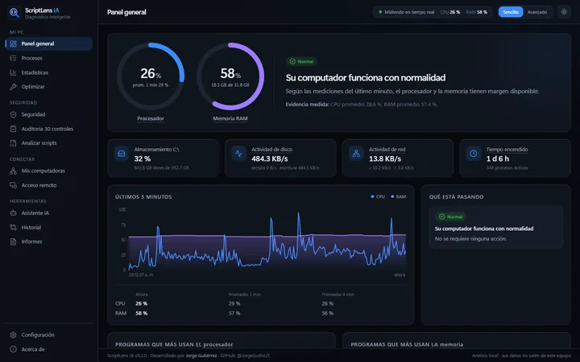
Panel general
Muestra cuánto trabajan el procesador, la memoria, el disco y la red, y te dice en una frase si el equipo está tranquilo o sobrecargado. Juzga el consumo del último minuto, no un pico de un segundo.
Leer en el manualVersión 0.2.0 disponible
Diagnostica, supervisa y comprende el estado de tus computadoras Windows.
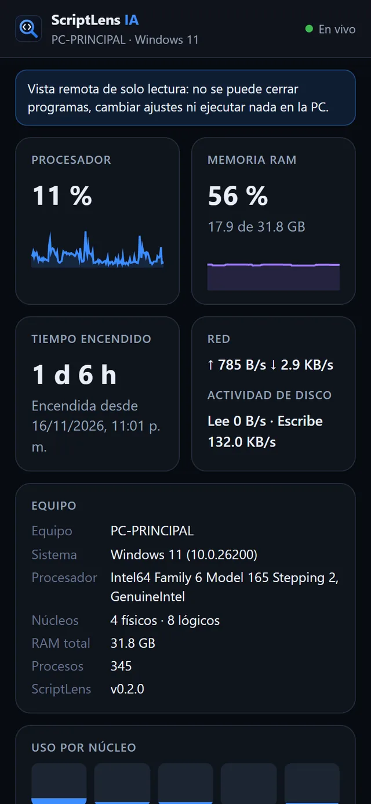
Capturas reales de la aplicación. La del celular es la vista remota abierta en un navegador con tamaño de teléfono, en el mismo equipo.
Diez funciones en una sola aplicación. Toca una para verla en detalle.
Diez módulos, organizados como en la aplicación. Elige uno para ver una captura real y para qué sirve.
Mi PC
Seguridad
Conectar
Herramientas

Muestra cuánto trabajan el procesador, la memoria, el disco y la red, y te dice en una frase si el equipo está tranquilo o sobrecargado. Juzga el consumo del último minuto, no un pico de un segundo.
Leer en el manual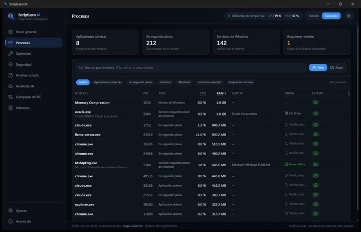
Encuentra qué programa está gastando recursos. Para cada uno verás su ruta, su firma digital y respuestas a «¿qué hace?», «¿puedo cerrarlo?» y «¿es sospechoso?». Cerrar algo siempre pide tu confirmación.
Leer en el manual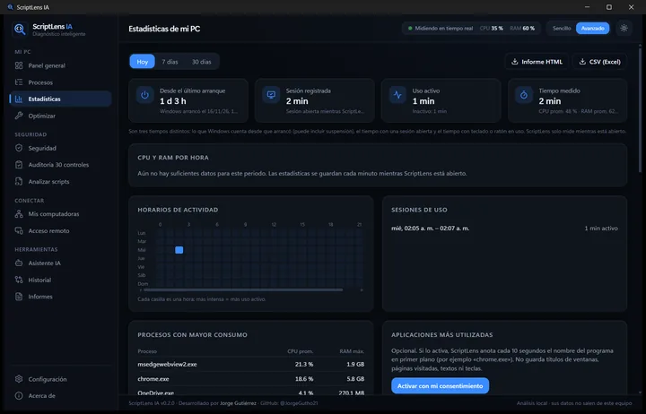
Cuándo se encendió el equipo, cuánto tiempo se usó de verdad y cómo variaron la CPU y la RAM por hora, día y semana. Puedes pausarlas, borrarlas o exportarlas a HTML y CSV.
Ver la explicación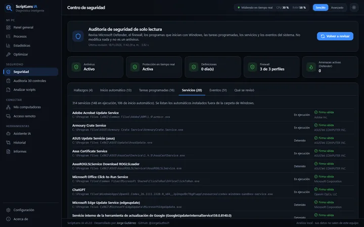
Revisa Microsoft Defender, el firewall, lo que arranca con Windows, las tareas programadas y los servicios. Cada hallazgo trae la evidencia y una sugerencia; nada se cambia por tu cuenta.
Leer en el manual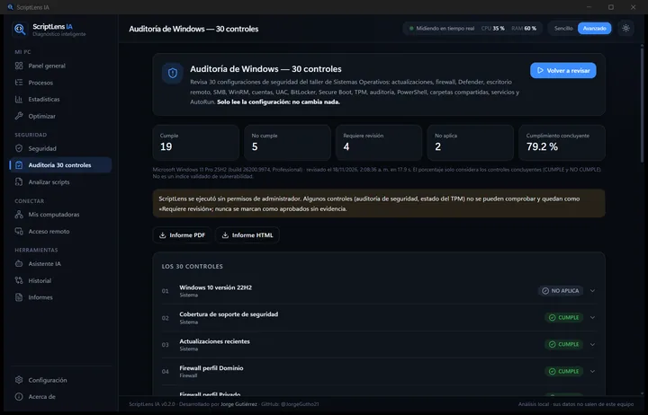
Comprueba 30 configuraciones de seguridad de Windows y explica cada resultado con evidencia y una recomendación. Solo lee la configuración: nunca la modifica.
Ver la explicación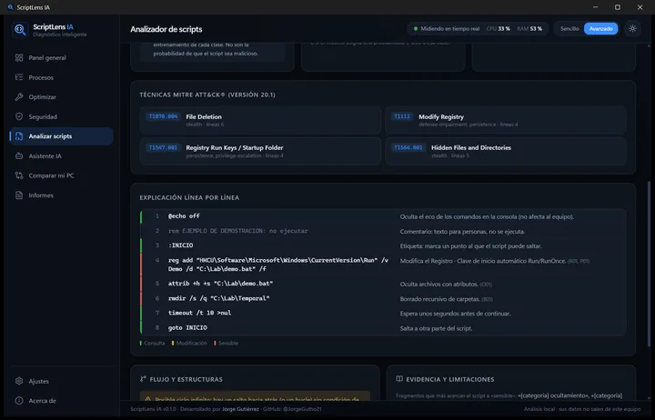
Abre un archivo BAT, CMD o PowerShell y ScriptLens explica qué haría, línea por línea, sin ejecutarlo. Usa 43 reglas asociadas a MITRE ATT&CK y desofusca el código antes de analizarlo.
Leer la documentación técnica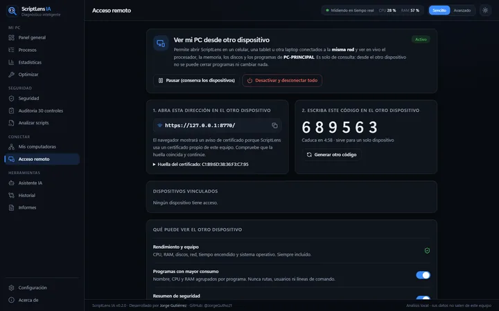
Mira tu PC desde el celular u otra laptop de la misma red. Es de solo lectura, está apagado hasta que lo activas y cada dispositivo necesita un código y tu autorización.
Ver el paso a paso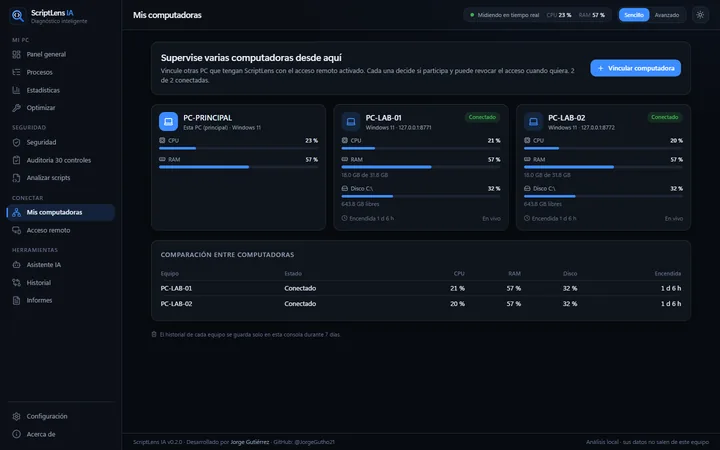
Una consola para supervisar varias PC con ScriptLens: estado, CPU, RAM, disco, alertas, historial de 24 horas y comparación entre equipos.
Ver cómo funciona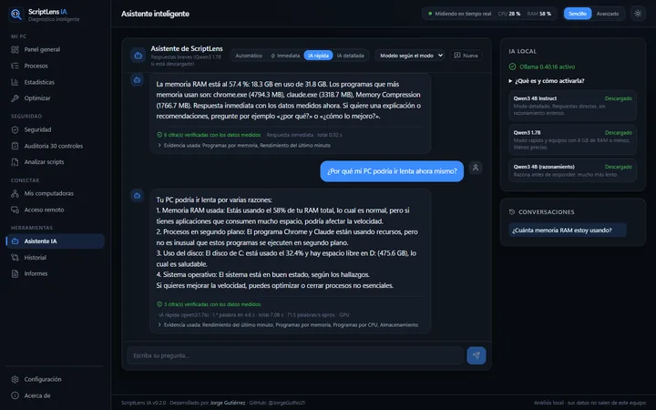
Pregunta en lenguaje normal. Los datos simples se responden al instante; las explicaciones, con un modelo de IA que funciona en tu propio equipo. Cada cifra se compara con las mediciones.
Ver los modos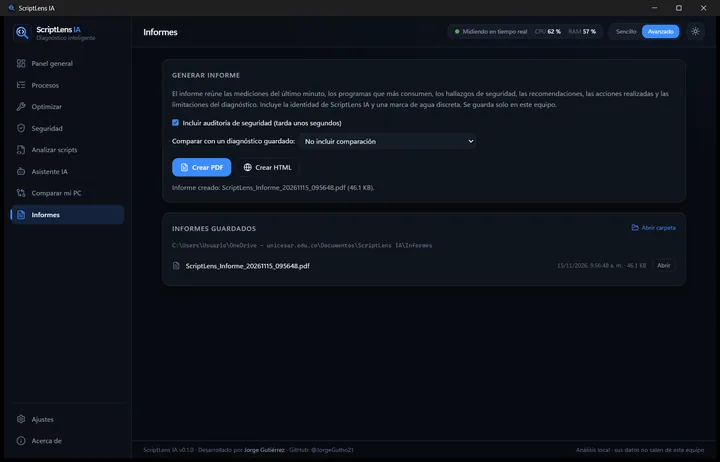
Guarda diagnósticos, compara dos momentos y exporta informes PDF o HTML con métricas, evidencias y recomendaciones. Se guardan en Documentos\ScriptLens IA\Informes.
Leer en el manualAbre en el celular la dirección que muestra tu PC y consulta su estado en vivo. Nadie puede cerrar programas ni cambiar nada desde fuera.
En la PC
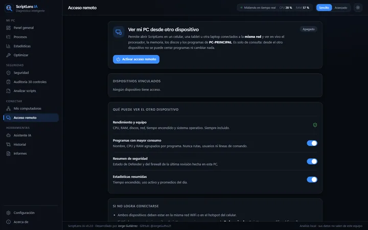
En la PC
https://192.168.1.25:8765/.En el celular
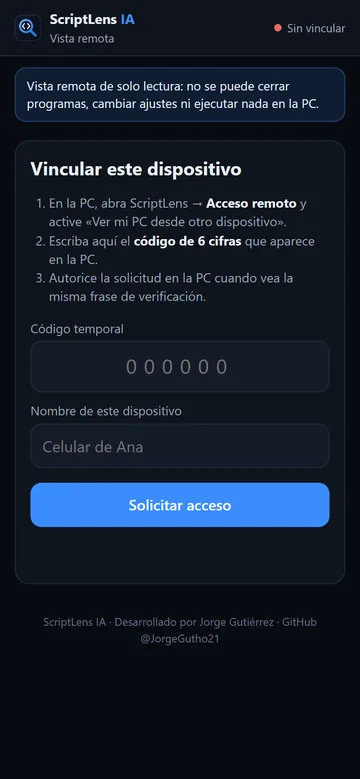
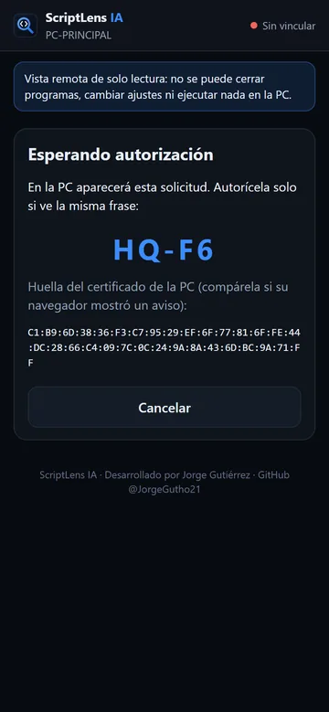
En la PC
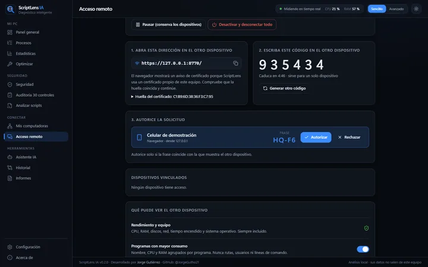
En el celular
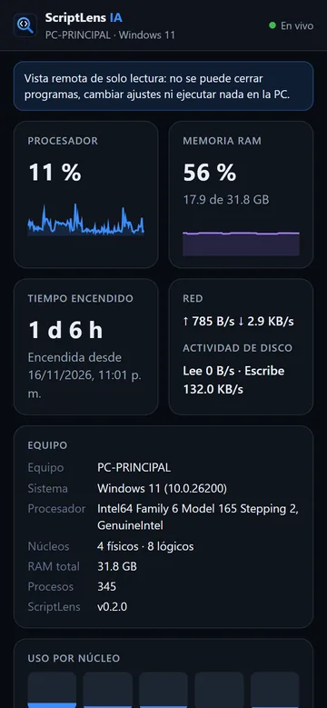
En la PC
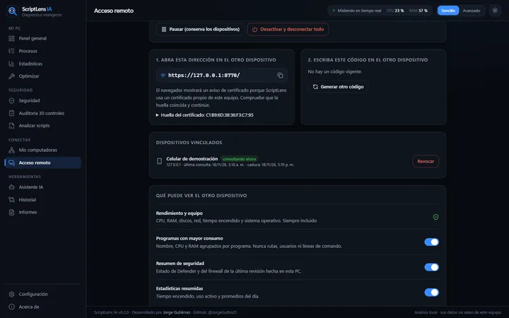
Sobre estas capturas. Son reales, pero se tomaron en un solo equipo con la dirección local 127.0.0.1 en lugar de una red WiFi, y la vista del celular se abrió en un navegador con tamaño de teléfono. El código y la huella que aparecen ya no son válidos. La prueba con un celular físico está pendiente y se documenta en el estado de la versión 0.2.
Desde Conectar → Mis computadoras, una PC con ScriptLens hace de consola y consulta a las demás cada 5 segundos. Cada equipo decide si participa y puede retirarse cuando quiera.
En la otra PC activa el acceso remoto. En la consola pulsa Vincular computadora, escribe su IP, el puerto y el código, y autoriza la solicitud en esa PC si la frase coincide.
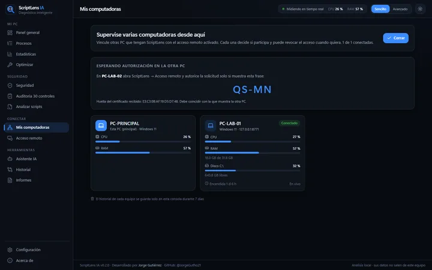
Pulsa la tarjeta del equipo para abrir el detalle: CPU, RAM y disco al momento, la gráfica de las últimas 24 horas y los programas que más consumen. Un aviso recuerda que estás viendo otra PC.
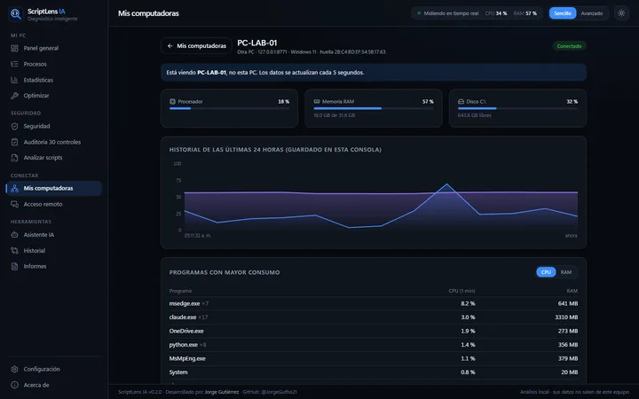
Conectado significa que respondió en los últimos 20 segundos. Desconectado muestra la hora de la última lectura y avisa de que esas cifras no son actuales.
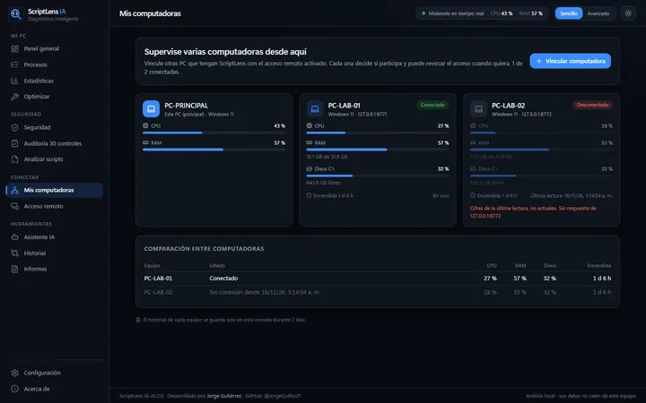
| Diagnóstico local | Mis computadoras | |
|---|---|---|
| Qué equipo ves | La PC donde está abierto ScriptLens | Otras PC que te autorizaron |
| Qué puedes hacer | Consultar y, con tu confirmación, cerrar programas u optimizar | Solo consultar |
| Información | Completa: procesos con ruta y firma, seguridad, scripts | CPU, RAM, disco, red, programas agrupados y alertas |
| Historial | En esta PC | Una lectura cada 10 s, guardada 7 días en la consola |
| Quitar el acceso | No aplica | Desvincular en la consola, o Revocar en la otra PC |
Simulación de varios equipos. PC-LAB-01 y PC-LAB-02 son instancias aisladas de ScriptLens que se ejecutaron en el mismo computador (por eso sus cifras se parecen). La prueba con dos computadoras físicas está pendiente.
Tres formas de entender tu equipo sin ser especialista: cómo se usa, qué tan bien está protegido y qué significa cada dato.
Revisa la configuración de seguridad de Windows en unos 15 segundos y la explica en lenguaje sencillo. No cambia nada: si algo debe corregirse, te dice cómo hacerlo.
En el equipo de pruebas (Windows 11 Pro 25H2, sin administrador) el resultado fue 19 que cumplen, 5 que no, 4 por revisar y 2 que no aplican. Cada computador obtendrá su propio resultado.
Datos medidos, sin IA. Para «¿cuánta RAM estoy usando?».
Respuestas breves con un modelo pequeño (Qwen3 1.7B).
Explicaciones más completas (Qwen3 4B Instruct).
Bajo cada respuesta verás cuántas cifras se comprobaron contra las mediciones y qué datos se usaron. La IA no puede ejecutar acciones.
Medición en el equipo de pruebas (31,8 GB de RAM, GPU integrada, 10 preguntas de referencia): modo automático con una mediana de 3,5 s por respuesta; IA detallada, 22,4 s. En otro hardware los tiempos serán distintos. Las respuestas inmediatas no necesitan Ollama; la IA sí (resultados completos).
Imágenes reales de la aplicación con datos del equipo de pruebas. Selecciona una para ampliarla; con las flechas del teclado pasas a la siguiente.
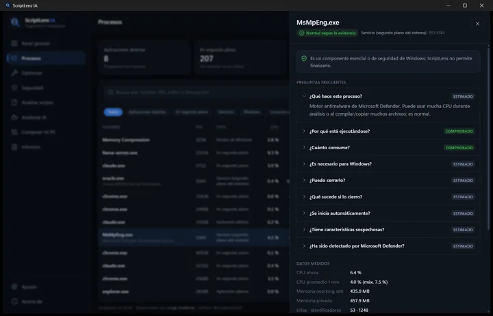
Detalle de un proceso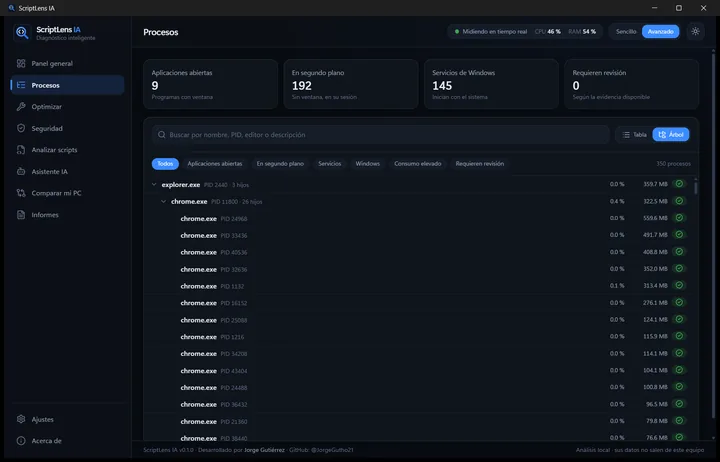
Árbol de procesos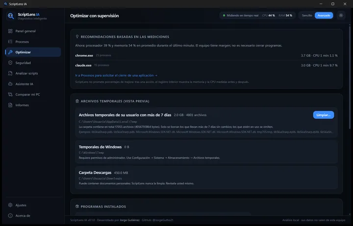
Optimizar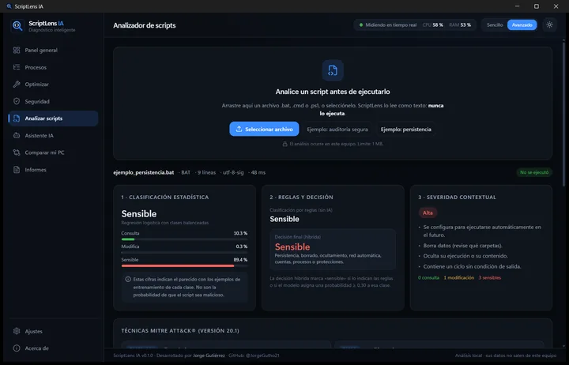
Análisis de scripts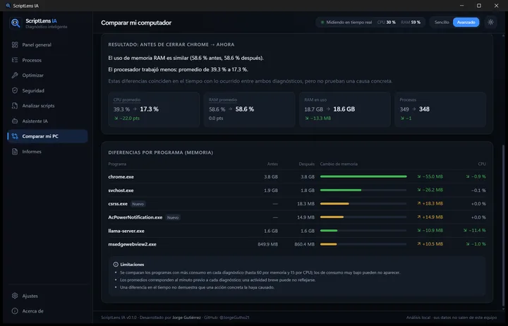
Comparar mi PC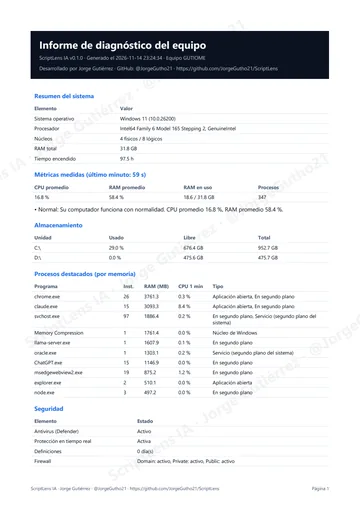
Informe PDF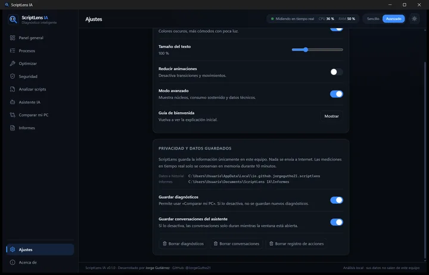
Privacidad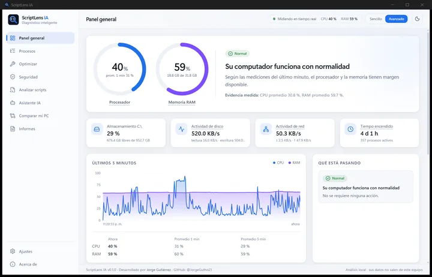
Modo claroLas capturas de procesos, scripts, optimizar, comparar, privacidad y modo claro son de la versión 0.1.0; esos módulos no cambiaron de aspecto. Los originales en PNG están en docs/capturas.
Diez pasos, de la descarga al primer diagnóstico. No necesitas permisos de administrador.
Estás en ella: jorgegutho21.github.io/ScriptLens. Descarga ScriptLens solo desde aquí o desde la release v0.2.0 de GitHub.
Descarga el instalador ScriptLens-IA_0.2.0_x64-setup.exe (52 MB) y su archivo de verificación. El navegador los guarda en Descargas.
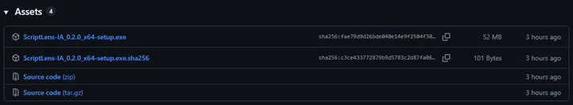
Abre la carpeta Descargas, escribe powershell en la barra de direcciones del Explorador y pulsa Enter. Pega este comando:
Get-FileHash ".\ScriptLens-IA_0.2.0_x64-setup.exe" -Algorithm SHA256El valor de Hash debe ser exactamente este:
FAE79D9D26BDE040E14E9F2504F304554FAF6A166DDA0F0F88B2EFE099813E2C
Si un solo carácter es distinto, no abras el archivo y vuelve a descargarlo.
Haz doble clic en el archivo. Si aparece «Windows protegió su PC», es el aviso de SmartScreen para programas sin firma comercial, como este. No lo ignores por costumbre: continúa con Más información → Ejecutar de todas formas solo si descargaste el archivo de esta página y la huella del paso 3 coincide. Si Windows indica una amenaza o tu organización bloquea la instalación, detente.
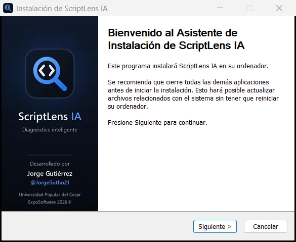
Bienvenida: Siguiente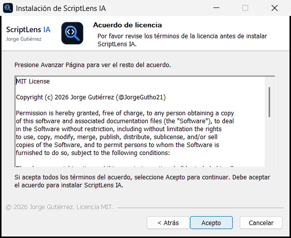
Licencia MIT: Acepto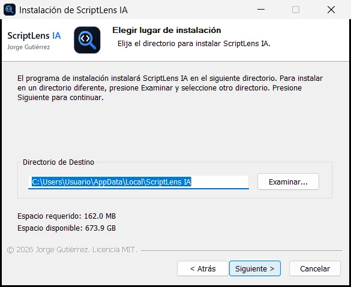
Carpeta: Siguiente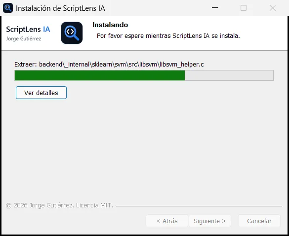
Espera unos segundosSi ya tenías una versión anterior, el instalador ofrece Añadir o reinstalar componentes: elígelo y pulsa Siguiente. Tus datos se conservan.
Deja marcada Ejecutar ScriptLens IA y pulsa Terminar. El acceso directo en el escritorio es opcional.
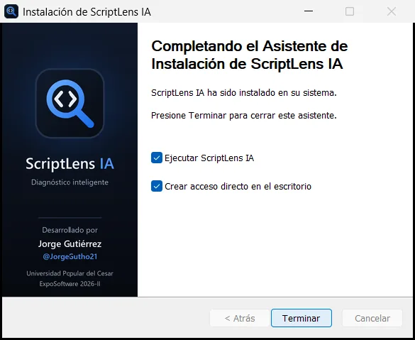
Busca ScriptLens IA en el menú Inicio. La primera vez, el motor tarda hasta 30 segundos en arrancar y aparece un asistente de bienvenida.
Abre Panel general y deja que mida durante un minuto. Lee la frase de estado: te dice si el equipo va bien y qué lo está cargando.
Prueba Procesos, Estadísticas, Seguridad, la Auditoría de 30 controles y el Asistente IA. Ninguna acción que cambie el sistema se realiza sin tu confirmación.
Son opcionales y empiezan apagadas. Sigue el paso a paso del acceso remoto para ver tu PC desde el celular o supervisar otras computadoras.
Diagnóstico, procesos, estadísticas, seguridad, auditoría, análisis de scripts, informes, acceso remoto, Mis computadoras y respuestas inmediatas del asistente.
Ollama y un modelo Qwen3 para las respuestas con IA. Se instala aparte; la sección Asistente IA explica cómo.
| Mínimo | Recomendado para la IA local | |
|---|---|---|
| Sistema operativo | Windows 10 (1809 o posterior) u 11, 64 bits | Windows 11 de 64 bits actualizado |
| Memoria RAM | 4 GB | 8 GB o más |
| Disco libre | 200 MB | 3 GB (incluye el modelo de IA) |
| Componentes | Microsoft Edge WebView2 (incluido en Windows 11) | Ollama |
| Permisos | Cuenta de usuario estándar | Igual |
| Acceso remoto | Ambos dispositivos en la misma red | Red privada o hotspot de un celular |
No funciona en Windows de 32 bits, Windows 7 u 8, macOS ni Linux. Probado en Windows 11 Pro 25H2; Windows 10 y equipos de 4 GB están pendientes de prueba (matriz de compatibilidad).
No. El acceso remoto está apagado por defecto. Cuando lo activas, cada dispositivo necesita un código temporal y que pulses «Autorizar» en la PC. Puedes revocarlo cuando quieras.
No. La vista remota es de solo lectura: el servidor remoto ni siquiera tiene las rutas de acciones.
La conexión está cifrada, pero con un certificado propio de tu PC, porque no existe una autoridad que certifique direcciones como 192.168.x.x. Compara la huella que muestra ScriptLens y continúa solo si coincide.
Muchas redes institucionales aíslan a los dispositivos entre sí. Activa el hotspot de un celular y conecta ahí la PC y el otro dispositivo.
No. Solo cuentan segundos de actividad. El registro de aplicaciones guarda únicamente el nombre del programa y solo si lo activas. Las páginas web no se registran.
No. El asistente usa Ollama en tu propio equipo y las preguntas simples se responden sin IA. Internet solo hace falta para descargar ScriptLens y el modelo.
No. La seguridad y la auditoría solo leen la configuración. Las acciones de optimización piden confirmación y quedan registradas con mediciones antes y después.
Espera 30 segundos. Si sigue igual, ciérrala y ábrela de nuevo desde Inicio. Si falta WebView2, revisa los requisitos. Si continúa, repórtalo en GitHub con tu versión de Windows y el mensaje.
Escanea con la cámara del celular para abrir esta página o el código fuente. Los mismos códigos están en el póster del proyecto.